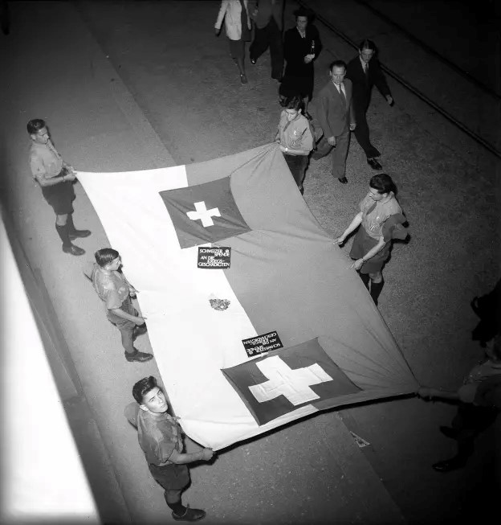
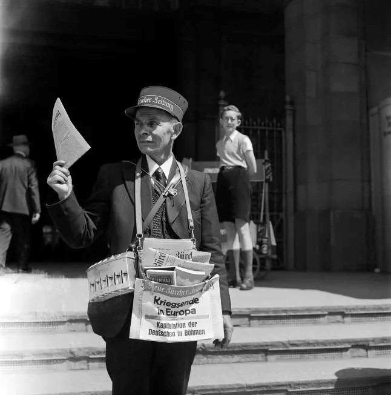
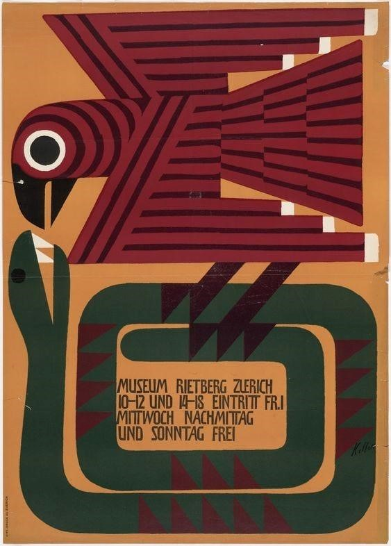
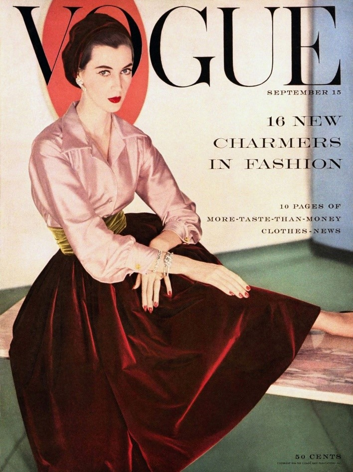
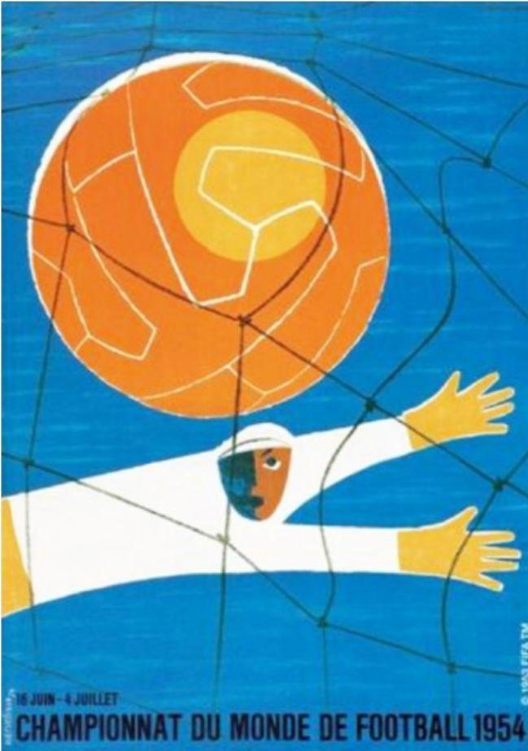
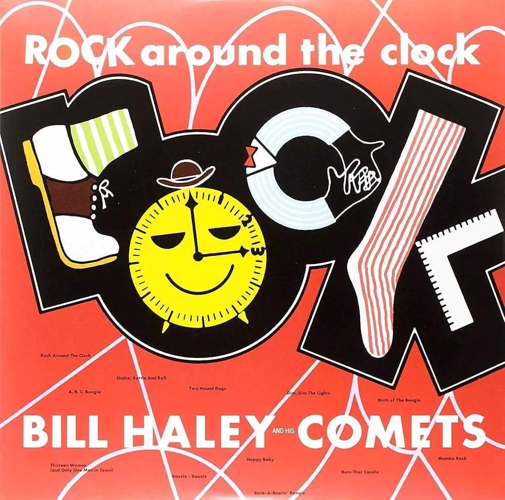

Contexto Geral
A Copa de 1954 aconteceu em um período de reconstrução da Europa após a Segunda Guerra Mundial. A Suíça, escolhida como sede, representava estabilidade e neutralidade em um continente ainda marcado pelos impactos da guerra. A arte dos anos 50 refletia sentimentos contraditórios: esperança, modernidade e também os traumas deixados pelos conflitos.


Impactos Artísticos
Nos anos 1950 surgiu o Estilo Tipográfico Internacional, também conhecido como Design Suíço. O movimento valorizava clareza, organização, simplicidade e uso de grades geométricas nos cartazes e materiais gráficos. Esse estilo influenciou fortemente o design da Copa de 1954 e se tornou referência mundial na comunicação visual.

Artistas no Pós-Guerra
Entre os artistas mais importantes da época estavam:
Moda
A moda dos anos 50 foi marcada pelo “New Look”, criado por Christian Dior. O estilo valorizava saias amplas, cinturas marcadas e elegância feminina, simbolizando reconstrução e prosperidade após os anos de guerra.

Cinema
O cinema viveu um período de crescimento e modernização. Filmes como Sindicato de Ladrões, Janela Indiscreta e Os Sete Samurais marcaram a época. As produções passaram a usar novas tecnologias, como telas mais largas e filmes coloridos, tornando o cinema uma das principais formas de entretenimento mundial.
Futebol e Identidade Cultural
A Copa de 1954 ajudou a fortalecer identidades nacionais. O “Milagre de Berna” representou a recuperação da Alemanha no pós-guerra, enquanto o Brasil consolidava sua identidade no futebol com a adoção definitiva da camisa amarela.
Representações Visuais
O cartaz oficial da Copa, criado por Gino Boccasile, foi influenciado pelo Art Déco e simbolizava integração entre os países. A Copa também foi a primeira transmitida pela televisão em vários países europeus, aumentando o impacto cultural do torneio.

Música
A música dos anos 50 vivia a transição para o rock and roll, com destaque para “Rock Around the Clock”, de Bill Haley. Outros estilos populares eram jazz, blues, country e samba-canção. Ainda não existia música oficial das Copas do Mundo, mas as rádios já usavam músicas populares durante as transmissões esportivas.

Mascotes e Logos
A Copa de 1954 não teve mascote oficial. A tradição começou apenas em 1966. Já o torneio contou com o primeiro logotipo oficial de uma Copa do Mundo: uma bola de futebol com a cruz suíça ao centro.